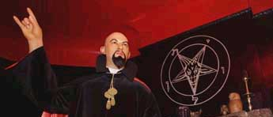

ЦЕРКОВЬ САТАНЫ
В 1966 году Антон Шандор ЛаВей основал Церковь Сатаны. 30 апреля, на Вальпургиеву Ночь, он обрил свою голову наголо и положил начало новой Сатанинской Эры. Именно так Церковь Сатаны обозначает факт своего рождения, рождения тайны, заговора или просто смешного скандального розыгрыша.
Вот то, что представители Церкви говорят о создании организации – «Мы были основаны в 1966 г. Антоном Шандором ЛаВеем, нашим Верховным Жрецом, который провозгласил Год Первый, открыв врата для революции, поднятой, чтобы сокрушить лицемерие и глупость, которые правили последние 2000 лет. Начиная с 1966 года, мы остаемся наибольшей угрозой для тех, кто остановил бы прогресс во имя духовности. Мы – следопыты на заброшенных путях науки, человеческих побуждений и тайны всего, что является действительно оккультным». Эти слова вызывают одобрение, отзываются своим значением внутри, но в этих словах сокрыта неуловимая, порочная практика. Эти слова могут означать очень многое, но могут означать лишь становление незаурядной организации в заурядном мире. Значение звучащих слов и их смысл в понимании самой Церкви, а также конкретные результаты позволяют открыть истинное значение появления Церкви Сатаны и значение их идеологии.
Обладая незаурядным талантом мистификатора и психолога, ЛаВей создал самую противоречивую и уникальную организацию в мире – устрашающую и возбуждающую любопытство, простую по своей форме и сути, но в тоже время оставляющую место для собственных домыслов, привлекательную как для обывателей, так и для незаурядных личностей.
История Церкви слишком противоречива и туманна для того, чтобы приводить ее здесь целиком. Правда и искусный вымысел настолько сильно перемешались, что сейчас составляют единое целое. Но доктрина Церкви Сатаны не может рассматриваться в отрыве от ее истории, они напрямую связаны. Негодяи и преступники, известные режиссеры, актеры и простые обыватели, талантливые люди, уставшие от однообразия сытого мира, – каждый добавил что-то к истории самой порочной организации 21 века. Чарльз Мэнсон, Сьюзан Аткинс, Мэрелин Монро, Джейн Менсфилд, Кенет Ангер, Мэрлин Мэнсон, Глен Бентон – вот лишь несколько имен, которые либо искупались в лучах славы Церкви, либо привнесли свое участие в развитие этого мифа.
 Церковь Сатаны очень быстро стала явлением контркультуры. Факт членства в
этой организации исключительно повышал скандальный статус деятелей культуры,
которым хотелось умеренного качественного «уродства». Церковь давала возможность
быть не таким как все, добавляла исключительности своим членам, укутывала их
покрывалом тайны и заговора. Это действует и сейчас. Розовый членский билет
ценой в 100 долларов наделяет его обладателя некой инфернальностью. Более того,
сам факт прочтения Сатанинской Библии уже качественно отличает человека от всего
остального стада.
Церковь Сатаны очень быстро стала явлением контркультуры. Факт членства в
этой организации исключительно повышал скандальный статус деятелей культуры,
которым хотелось умеренного качественного «уродства». Церковь давала возможность
быть не таким как все, добавляла исключительности своим членам, укутывала их
покрывалом тайны и заговора. Это действует и сейчас. Розовый членский билет
ценой в 100 долларов наделяет его обладателя некой инфернальностью. Более того,
сам факт прочтения Сатанинской Библии уже качественно отличает человека от всего
остального стада.
Жизнь ЛаВея неотделима от Церкви Сатаны. Его фигура вызывала жгучее любопытство, его секреты сводили с ума, его тайная жизнь приравнивалась к самым страшным тайнам доступным человеку. 21 век – век обмана и скуки. Человек хочет того, чтобы его кормили скандалами и запретными лакунами. ЛаВей удачно использовал это. Каждый хотел быть таким, как он. Именно ЛаВей ассоциировался с типом настоящего сатаниста: коварного, циничного и свободного. Домысел и любопытство завершили создание этого образа. Используя шокирующие словосочетания применительно к Сатанизму – Церковь, Библия – ЛаВей затронул тайные струны человека, неуловимо перенес значение слов и их ценность на созданное собой. Организация, созданная им, обрела ореол церкви, в которой присутствует тайное и высшее, недоступное человеку. Его книга обрела атмосферу откровения, тождественного христианскому, только с обратным знаком. Это подтверждает его гений, это выставляет церковь в ее истинном обличии. Лишите всего тайны, и вы увидите нечто сугубо посредственное.
Факт официальной регистрации Церкви отменил настоящую сатанинскую традицию. Отныне для большинства суть Сатанизма определялась политикой Церкви и ее теоретическими материалами. В 1969 году ЛаВей написал Сатанинскую Библию – самый главный идеологический труд в Церкви Сатаны. До этого Церковь существовала в условиях идеологического вакуума. Книга сразу стала пользоваться бешеной популярностью. Огромные тиражи говорили не о популярности Сатанизма, а о глупости обывателей. Каждый хотел прикоснуться к запретному. Тайное и темное вдруг стало доступным. Оно изменило свое значение. Отныне то, что выходило из-под пера ЛаВея – определялось именно так. Изначальная традиция Сатанизма просто использовалась ЛаВеем для придания завершенности образа. Церковь Сатаны использует ритуальные элементы поклонения Князю Тьмы, но при этом утверждает о том, что Дьявола не существует. Единственным божеством для человека должен быть он сам. Дьявол и человек поменялись местами. Человек стал обладать силой. Его собственные интересы, его собственный мир стали единственной реальностью. Тьме отвели очень скромное место, ведь легко сказать о том, что этой Реальности не существует в животном мире двуногих богов.
 Сатанинская
свадьба, сатанинские похороны, сатанинское крещение детей – абсолютно напоминают
подобные человеческие мероприятия, только обставленные с мистическим антуражем.
Это – игра, профессиональная игра во Тьму, которая дарит эстетическое и
моральное удовлетворение. Но как любая игра, она рано или поздно заканчивается
плачевно. Заигрывание с Тьмой недопустимо. Это бесчестно, как бесчестно
средневековое поверие о том, что Дьявола необходимо обманывать. Церковь Сатаны,
устами своих авторитетных членов, сама заявляет о своем отношении с Сатаной – «мы
принимаем имя Сатаны только в качестве концепции. Сатана по своей сути был
символом, бросившим вызов бесплодному мышлению, воззвавшим к потворству,
восставшим против рабства, и он правдиво отражает человеческую натуру и все
радости мира плотского».
Сатанинская
свадьба, сатанинские похороны, сатанинское крещение детей – абсолютно напоминают
подобные человеческие мероприятия, только обставленные с мистическим антуражем.
Это – игра, профессиональная игра во Тьму, которая дарит эстетическое и
моральное удовлетворение. Но как любая игра, она рано или поздно заканчивается
плачевно. Заигрывание с Тьмой недопустимо. Это бесчестно, как бесчестно
средневековое поверие о том, что Дьявола необходимо обманывать. Церковь Сатаны,
устами своих авторитетных членов, сама заявляет о своем отношении с Сатаной – «мы
принимаем имя Сатаны только в качестве концепции. Сатана по своей сути был
символом, бросившим вызов бесплодному мышлению, воззвавшим к потворству,
восставшим против рабства, и он правдиво отражает человеческую натуру и все
радости мира плотского».
По прошествии нескольких лет политика церкви начинает меняться. По всему миру начинают возникать подобные организации, сатанинские секты и гротто. Возглавляемые как ненормальными психами, так и людьми, преданными Тьме, эти организации стремились утвердить власть Князя Тьмы. Вместо того, чтобы поддержать начавшееся движение Сатанизма по всему миру, церковь начинает дистанцироваться от подобных организаций. «Из-за того, что Антон ЛаВей сделал Сатанизм весьма популярным, многие хотят проехаться у нас на хвосте. Если вы недостаточно знакомы с Царством Тьмы, внезапно почувствовав огни Сатаны, пылающие внутри вас, имейте в виду: есть личности, желающие на вас нажиться, утверждающие, что сделают вас Великим Черным Магом за одну ночь, обещающие свести вас с «Настоящими Мастерами», и которые могут сказать, что связаны с Церковью Сатаны или чем-то вроде. Поберегите свои деньги. Satanic Bunco Sheet – это список приемов, при помощи которых можно распознать псевдо- и анти-Сатанинские группы, которые расползаются еще с той поры, как Антон ЛаВей организовал Церковь Сатаны». Существует очень тонкая грань между тем, чтобы отстаивать свои принципы и прятаться за ними. Замыкаясь в рамках своих идей, Церковь яростно начинает отстаивать свое монопольное право на Сатанизм, гребя всех под одну гребенку. Происходит разделение на тех, кто поддерживает Церковь и является связанным с ней, и тех, «кто, опираясь на ее опыт» делает что-то ненужное. Обвинения в заимствовании и зависти, льются как из рога изобилия…, неудивительно, ведь Церковь – это элита.
 В самой церкви начинается раскол, в 1970 годах от церкви отделилась группа,
возглавляемая Майклом Аквино. Они основали свою организацию — Храм Сета, которая
возродила культ египетского бога Сета, отождествляя его с Сатаной. Это было не
просто расхождение во взглядах – это был конфликт Идей, конфликт Плоти и Духа.
Храм Сета отличается от Церкви Сатаны, но этих отличий недостаточно для того,
чтобы не быть явлением человеческого мира. Сатанизм, представленный Храмом Сета,
заключается в следующем – «Сатанизм это вера в существование Сатаны, как
разумной сущности или духа Вселенной, и поклонение Сатане и повиновение Его
принципам, стандартам и целям. Поскольку Сатана описывается в качестве
метафизической сущности – Дьявола или Архангела, подобная вера в Него скорее
составляет религию, а не рациональную философию или идеологию». Храм Сета
слишком желает отличаться от Церкви Сатаны, слишком противоречит ей, и это
принижает суть их устремлений, несмотря на то, что они могут быть верны. Как
явление, созданное в условиях американского образа жизни, Храм Сета также слишком
человечен в следовании своему видению Сатанизма.
В самой церкви начинается раскол, в 1970 годах от церкви отделилась группа,
возглавляемая Майклом Аквино. Они основали свою организацию — Храм Сета, которая
возродила культ египетского бога Сета, отождествляя его с Сатаной. Это было не
просто расхождение во взглядах – это был конфликт Идей, конфликт Плоти и Духа.
Храм Сета отличается от Церкви Сатаны, но этих отличий недостаточно для того,
чтобы не быть явлением человеческого мира. Сатанизм, представленный Храмом Сета,
заключается в следующем – «Сатанизм это вера в существование Сатаны, как
разумной сущности или духа Вселенной, и поклонение Сатане и повиновение Его
принципам, стандартам и целям. Поскольку Сатана описывается в качестве
метафизической сущности – Дьявола или Архангела, подобная вера в Него скорее
составляет религию, а не рациональную философию или идеологию». Храм Сета
слишком желает отличаться от Церкви Сатаны, слишком противоречит ей, и это
принижает суть их устремлений, несмотря на то, что они могут быть верны. Как
явление, созданное в условиях американского образа жизни, Храм Сета также слишком
человечен в следовании своему видению Сатанизма.
ЛаВей все больше уделяет внимания собственным делам – например, созданию искусственных компаньонов, которые должны изменить отношение человека к себе и к сексу. Он разрабатывает методику превращения людей в вампиров, записывает музыку. Делами церкви занимаются его дети – дочери Карла и Зина, которые впоследствии со скандалами разорвали отношения с Церковью Сатаны.
Время игр, оргий и сумасшествия закончилось. Начался новый этап развития церкви. В 1970 г. внутри Церкви было создано магическое общество – Орден Трапеции. Орден занимается магическими исследованиями, а также безопасностью Церкви Сатаны. Из числа членов Ордена Трапеции назначается руководство Церкви. Эти магические исследования никогда и нигде не обозначались. Завеса тайны продолжает сгущаться. Жрецы и жрицы, маги и магини, магистры и последователи – Церковь продолжает оставаться организацией. Титулы и должности противоречат озвученному свободолюбию, и не означают близости к Силам Тьмы.
В 80-е годы Церковь Сатаны активно расширяет свою деятельность, находя своих верных последователей по всему миру. Это напоминает расхождение кругов в мутной луже воды. Гедонисты и атеисты, эгоисты и несвободные свободолюбцы подхватили шатающееся знамя Церкви Сатаны. Обещанной революции не произошло, новая сатанинская эра во многом напоминала развитие человека. Детство, бурная молодость, разумная зрелость, неизбежная старость и смерть.
Загадочная смерть ЛаВея во многом означала утрату возможности развития Церкви. Великий Черный Папа, исключительная сатанинская личность, умер в католическом госпитале от сердечного приступа. В этом сокрыта ирония, и ему не удалось избежать присутствия бога в момент своей смерти.
Смерть принесла неразбериху в ряды Церкви. Многочисленные свободные харизматики дружно стали делить мертвеца и его наследие. Взаимные обвинения и претензии щедро раздавались, голоса срывались в частых ритуалах проклятия.
 Сейчас выделились новые фигуры, которые способны в чем-то восполнить утрату.
После смерти ЛаВея в 1997 г. верховной жрицей Церкви Сатаны стала Бланш Бартон,
его биограф и спутница. В 2001 г. новым верховным жрецом Церкви Сатаны стал
Питер Гилмор, но при этом Бланш Бартон сохранила пост верховной жрицы, и теперь
руководство организацией они осуществляют совместно. Сетевыми вопросами
занимается магистра Пегги Надрамия, которая также является Верховной Жрицей.
Является ли она и.о. Бланш Бартон – узнать не удалось.
Сейчас выделились новые фигуры, которые способны в чем-то восполнить утрату.
После смерти ЛаВея в 1997 г. верховной жрицей Церкви Сатаны стала Бланш Бартон,
его биограф и спутница. В 2001 г. новым верховным жрецом Церкви Сатаны стал
Питер Гилмор, но при этом Бланш Бартон сохранила пост верховной жрицы, и теперь
руководство организацией они осуществляют совместно. Сетевыми вопросами
занимается магистра Пегги Надрамия, которая также является Верховной Жрицей.
Является ли она и.о. Бланш Бартон – узнать не удалось.
Современная Церковь Сатаны консервативна. Проповедуя развитие и креативность, церковь вряд ли скажет что-либо новое. Она свободна лишь в отзвуке уже произнесенных слов, в утихающем эхе слов ЛаВея. Возможно, ценность этой организации заключается в доведении сказанного до совершенства, но неоднократные нападки и обвинения со стороны враждебного мира умерили пыл и потушили пламя. Церковь старается быть респектабельной, скандалы обескровливают ее. Церковь перестала быть категоричной. Пытаясь удержать Сатанизм в повиновении, она готова говорить противоречивые вещи. Парадоксы и усталая издевка – вот основной тон в переписке с Церковью.
Образ пугала для общественности, врага, который рядом, позиция вызова миру – все это стало привычным. Более того, и Церковь, и враждебный мир стали неразлучны. Это явления одного плана.
Сатанизм стал частью культуры, частью человеческого мира. Сатанизм перестал быть сакральным и перестал внушать страх. Темная традиция была нарушена, ей противопоставили что-то очень простое и человеческое. Сатанизм лишился своего неповторимого темного духа – того, что позволяет прикоснуться к реальности Тьмы.
 Сатанинская библия давала слишком простые и в то же время слишком разумные
ответы. Сатанизм стал явлением интеллектуальным, человеческим. Простые ответы,
ясная и четкая философия стала означать легкий способ вовлеченности, породив
огромное количество посредственностей от Сатанизма. Один из современных
руководителей церкви вообще определял Сатанизм как атеизм, интерес к магии и
самоуглубленность. Сам ЛаВей говорил, что Сатанизм это просто свободомыслие…
Заповеди, грехи и правила поведения очень напоминают инструкцию, как быть
сатанистом.
Сатанинская библия давала слишком простые и в то же время слишком разумные
ответы. Сатанизм стал явлением интеллектуальным, человеческим. Простые ответы,
ясная и четкая философия стала означать легкий способ вовлеченности, породив
огромное количество посредственностей от Сатанизма. Один из современных
руководителей церкви вообще определял Сатанизм как атеизм, интерес к магии и
самоуглубленность. Сам ЛаВей говорил, что Сатанизм это просто свободомыслие…
Заповеди, грехи и правила поведения очень напоминают инструкцию, как быть
сатанистом.
Очень сложно простому человеку не найти в сатанинской библии того, что ему близко, того, как он живет уже сейчас, не являясь сатанистом. Разумность и человеческая психология, манера вести себя и знать цену собственным словам и поступкам, желать большего и не размениваться на мелочи, презирать глупость и уважать силу, любить тайну и стремиться к развитию – все это может означать Сатанизм ЛаВея. А это значит, что таких сатанистов слишком много и все они – лишь разумные люди?
Церковь Сатаны гуманистична и, при всей своей циничной жесткости, она ориентирована на человека. Человек является центральной фигурой идеологии и философии церковного Сатанизма. Слишком часто звучат слова о том, каким человеку стоит быть или каким не стоит быть никогда. Плоть и разум составляют неразрывный союз, означающий суть их Сатанизма.
Обвинения в коммерческой подоплеке являются лишь частным случаем нашего несогласия с позицией Церкви в определении Сатанизма. Эти обвинения правомерны. Покупается не просто членство в организации, а возможность считать себя более сатанистом, чем все остальные.
Покупается сам Сатанизм. В первые годы существования церкви заявления о членстве подали более десяти тысяч человек. Сейчас количество членов превышает один миллион человек. Церковь Сатаны заявляет о том, что обладание карточкой члена не обязательно для того, чтобы быть сатанистом, но в любом случае такие сатанисты считаются вторичными, менее вовлеченными в Сатанизм. О важности и необходимости такой политики говорится, что это исторически сложившаяся традиция, это норма. Церковь – продукт американского образа жизни, его морали, ценностей и отношений. Происходит выборочная цензура ценностей и морали – что-то подается со знаком минус, что-то принимается абсолютно. Для американцев деньги имеют другое значение, чем для всего остального мира. Это средство потребления – пульс их жизни, их личное божество. Истинный Сатанизм не может быть совместим с подобным взглядом. Сатанизм выше каких-либо человеческих отношений, социальных и финансовых. Сатанизм подразумевает отношения с Сатаной, это Путь во Тьму.
Другой важной чертой доктрины Церкви является магия и ритуалы. В «Сатанинской библии» озвучивается разделение на малую и высшую магии, которые оказываются все-таки явлением одного плана и одного типа. Это то, что доступно человеку, исходит от человека и направлено на человека. Сам термин «магия» определяется как «Изменение ситуаций и событий в соответствии с волей человека, невозможное при применении обычных методов». Подразумевая оккультное, Церковь громко говорит о посредственном. Утверждая материализм и последовательно превознося плоть, Церковь заигрывает с тонкими планами. Отрицая дух, они, тем не менее, не смогли заявить о Сатанизме без основных его черт – взаимодействия с Силами Зла.
Но их магическая практика абсурдна в своей доступности. Стирается важная грань между теми, кто способен говорить во Тьму, и теми, кто говорить не способен. Снова происходит смещение акцентов – ритуалы и магия рассматриваются только в контексте достижения убогого человеческого блага.
Взаимодействие с Силами Тьмы ограничивается повторением имен, под которыми эти Силы известны человеку. Но эти имена звучат нелепо, суть призвания превращается в винегрет, содержимое которого определяется знанием географии и истории.
Это не взаимодействие с Тьмой, а собирание крох со стола, чтобы прожить в грязи еще один миг. Сначала человек, затем все остальное. Церковь Человека – может, это прозвучит более разумно? В то же время некоторые аспекты их магического наследия верны. Воля, вера и желание – в этом трудно не увидеть возможностей изменить себя сообразно Сатане.
Миф стал необходим. Миф стал убедительным аргументом в определении Сатанизма. Многие напрасно отрицают вклад ЛаВея, многие напрасно говорят о том, что ЛаВея истолковывают превратно, что его Сатанинскую Библию необходимо правильно понять. ЛаВей был яркой личностью. Ирония и сарказм, неожиданные обороты и выводы – это трудно недооценить. Кем он был – одаренным человеком или сатанистом – решать каждому самостоятельно. Но его личность все-таки неразрывно связана с организацией и религией, которую создал. Сам факт создания Церкви Сатаны был важным событием, вот только насколько их доктрина является Сатанизмом? Это действительно Церковь Сатаны, или это просто удобное название для того, чтобы обозначить это человеческое явление? Вопрос подобного соответствия заключается в том, кто есть Сатана – концепция, символ, архетипический эгрегор, эгрегориальный архетип – или Дух Зла, Противник, Великий Дьявол?
ЛаВея часто обвиняли в плагиате, в заимствовании у Ницше, Марка Твена и Рагнара Краснобородого. Позиция Церкви касательно этого момента такова – «Если что-то из написанного ЛаВеем кажется сходным с уже имеющимися концепциями – скорее всего это дополнено современными обстоятельствами, его собственными мыслями, а также аналогично нашей философии. Так как Сатанизм является работой в прогрессе, что-то вроде встречи философии и науки, мы с полной ответственностью берем концепции прошлого, обрабатываем их в нашем контексте и проносим их в будущее». Он выступил талантливым пропагандистом, благодаря действиям которого пагубные идеи получили большее распространение. Создав определенную основу в понимании Сатанизма, многих он направил в правильное русло, остальные не смогли пойти по этому Пути. Им достаточно их кривляний. Возможно, плюсом можно считать возможность отказаться от взглядов Церкви в трактовке Сатанизма и через это приблизиться к истине, обрести Тьму.
Некоторые идеи ЛаВея пленяют и очаровывают. Они чужеродны организационной структуре Церкви. Между двумя этими моментами – между тонким миром идеей и грубой формой человеческих отношений, в которых они воплощаются – есть разница. Ненормальные, шокирующие идеи говорят о ЛаВее как о безумце, который искал ответы, искал истину. Углы и вампиры, искусственные компаньоны и звуковые вибрации, – все это не получило должного развития, осев в закромах Церкви как наследие Черного Папы.
Мы и не за и не против Церкви Сатаны и ее создателя. Мы против человека и бога. И, воспользовавшись обозначенным принципом ответственности для ответственных, мы решили задать интересующие нас вопросы. Ответы читайте ниже, и как всегда, в них – правда и вымысел, составляющие единое целое. Воистину истина познается в сравнении.
На вопросы CONTRA DEI отвечает преподобный Мэтт Г. Парадайз (Matt G. Paradise), который общается с контркультурной прессой от имени Церкви Сатаны (Church of Satan) на протяжении более десятка лет. Парадайз, как глава Purging Talon Publishing, издает широко известный и многими приветствуемый журнал для последователей Сатанизма под названием Not Like Most, а также интернет-ежегодник Superhighway To Hell. Помимо этого, этот человек продюссирует два телевизионных шоу: Subterranean SINema и видео версию Satanism Today. Он также ответственен за редакцию и выпуск Книги Сатанинских Цитат (The Book of Satanic Quotations).
CONTRA DEI: Что нового в жизни Церкви Сатаны? Довольны ли вы результатами вашей работы?
Matt: По сути, ничего нового в жизни Церкви Сатаны не произошло, поскольку мы всегда оставались верны изначальной цели организации и религиозным ценностям, которые она установила и привела в систему. Лучшее подтверждение этому – в литературных работах известных членов организации, начиная от ее основателя доктора Антона Шандора ЛаВея (Dr. Anton Szandor LaVey).
 Несмотря на это, значительное число наших членов использовало достижения
современных технологий и медиа, благодаря чему была донесена верная информация о
Сатанизме, как в прямом смысле, так и просто с целью демонстрации. Что же,
думаю, что именно это все-таки можно назвать чем-то новым для нас. В целом же я
очень доволен многими нововведениями, творческой работой и интеллектом
настоящего поколения членов Церкви Сатаны, которых я знаю лично, или с работой
которых я ознакомлен. И я полностью доверяю лидерству нашего Верховного Жреца –
Питера Х. Гилмора (Peter H. Gilmore) и Верховной Жрицы – Пегги Надрамиа (Peggy
Nadramia).
Несмотря на это, значительное число наших членов использовало достижения
современных технологий и медиа, благодаря чему была донесена верная информация о
Сатанизме, как в прямом смысле, так и просто с целью демонстрации. Что же,
думаю, что именно это все-таки можно назвать чем-то новым для нас. В целом же я
очень доволен многими нововведениями, творческой работой и интеллектом
настоящего поколения членов Церкви Сатаны, которых я знаю лично, или с работой
которых я ознакомлен. И я полностью доверяю лидерству нашего Верховного Жреца –
Питера Х. Гилмора (Peter H. Gilmore) и Верховной Жрицы – Пегги Надрамиа (Peggy
Nadramia).
CD: Как вы оцениваете историю Церкви Сатаны?
Matt: Если я правильно понял вопрос, то скажу, что мы остаемся последовательными, преданными и сосредоточенными как Волей каждого из нас в отдельности, так и Волей всей организации, проповедующей Сатанизм.
CD: Каким вы видите будущее Церкви Сатаны и Сатанизма в частности?
Matt: С момента событий 9/11 наш лозунг «снисходительность» (который на этот момент более чем добился результатов) сменился на «справедливость». Ориентируясь на этот лозунг, вы можете увидеть в работах наших членов, должностных лиц и администраторов больший акцент именно на слове «справедливость». Это касается, в частности, того, что США и другие нации стремятся быстрыми темпами к войне. Другое, о чем хотелось бы сказать и о чем уже упоминалось выше, это – то, что мы продолжим признавать и защищать конкретные проявления Сатанинской философии, отображенной в Сатанинской Библии.
CD: Каковы были цели Церкви Сатаны изначально и каковы они сегодня?
Matt: Церковь Сатаны будет функционировать таким же образом и с такими же задачами, что и прежде: быть во главе самой страшной религии, делать доступной верную информацию о Сатанизме, быть полезной в качестве «общества взаимного восхваления (шутл.)», и как это было всегда – поощрять продуктивных и оставлять при своих интересах тех, кто откладывает на завтра то, что можно сделать сегодня.
CD: Преследует ли ваша организация какие-либо политические или социальные цели?
Matt: В нашей организации состоят люди всех политических течений: демократы, либералы, фашисты, монархисты и др. Причина такого многообразия заключается в том, что Сатанизм определяет лишь общие основные положения, с которыми согласны все Сатанисты, а над всем этим возводится то, что предназначено для каждого Сатаниста, нечто индивидуальное. Каждый Сатанист обдумывает свое окружение, подходя к этому практически, и находит политические и социальные возможности для достижения максимальной пользы и свободы. Зная это, можно совершенно спокойно сказать, что те Сатанисты, которые вовлечены в процессы политики (а некоторые не делают этого вовсе), в большинстве своем отдают свои голоса сугубо прагматически, а именно за последующий результат, а не за политического деятеля.
CD: Многие музыкальные группы представляют интересы Церкви Сатаны и поддерживают ее. Как это объяснить? Если это возможно, назовите какие-нибудь имена.
Matt: Многие члены Церкви Сатаны, непосредственно связаны с музыкой, как в мэйнстриме, так и на независимой сцене. Некоторые из них предпочитают держать свою причастность к нам в секрете. Мы в свою очередь, как организация, уважаем подобные тайны, что является стандартной политикой, и не открываем их до тех пор, пока на это не будет желанием самих анонимов. Другие же свободно публично заявляют о своей причастности к Церкви Сатаны и гордятся этим. Вот имена некоторых из этих групп: NON, Blood Axis, The Electric Hellfire Club, King Diamond, Marilyn Manson. За полным списком обращайтесь на www.churchofsatan.com
CD: ЛаВей негативно отзывался о Black Metal. Отражает ли его отношение позицию Церкви Сатаны в целом?
Matt: Я думаю, что отношение во многом зависит от того, какой аспект Black Metal рассматривается. Прежде всего Церковь Сатаны не в коей мере и никаким образом не потворствует преступным действиям, совершенным некоторыми (я подчеркиваю слово "некоторыми") Black Metal музыкантами, недальновидно утверждающими, что они делали это ради чести знамени Сатанизма. Определенно, подобное заявление в лучшем случае ошибочно. Это касается и поджогов церквей. Однако, если говорить о самом музыкальном стиле, то многие Сатанисты любят Black Metal, и это прекрасно. Никогда Церковь Сатаны не будет диктовать своим последователям, какими должны быть их музыкальные вкусы.
CD: Остается ли доктрина, созданная ЛаВеем, по-прежнему универсальной, или же она нуждается в изменениях или обновлении? Уверены ли вы в том, что Церковь Сатаны пройдет испытание временем (будет существовать в будущем)?
Matt: Я ответил на этот вопрос ранее.
CD: Могла ли Церковь Сатаны быть создана без участия ЛаВея? Насколько значителен его вклад в создание Церкви?
Matt: Учитывая тот факт, что именно ЛаВей создал Церковь Сатаны, как первую законную Сатанинскую церковь и первую в мировой истории организацию, утвердившую и обосновавшую Сатанизм как философию и религию, то я бы сказал, что иной возможности создания просто не было. Кроме этого, вклад Лавея был более чем значителен, он был просто необходим. Но те, кто неверно считает, что суть Церкви Сатаны заключается всего лишь в культе личности, будут разочарованы, узнав, что данная организация питает отвращение к менталитету «последователя», поощряя вместо него разумное взвешенное решение, встать в ряды Сатанизма. Говоря проще, настоящий Сатанист читает Сатанинскую Библию и видит себя, отраженного в ней. Недалекий послушник тщетно пытается стать тем, кого описывает книга. В первом случае мы имеем равнение и строй. В последнем – псевдо-Сатаниста.
CD: Жизнь ЛаВея была полна тайн. Кем он был на самом деле?
Matt: Большая часть жизни ЛаВея описана в его биографии «Тайная Жизнь Сатаниста» («The Secret Life Of A Satanist»), написанной Бланш Бартон (Blanche Barton). Некоторые дополнительные сведения приводятся в книге «Церковь Сатаны» («Church Of Satan») того же автора. Однако более объективные черты личности этого человека можно увидеть, прочитав его личные труды, собранные в книгах «Записная Книжка Дьявола» и «Говорит Сатана» («The Devil's Notebook», «Satan Speaks»). В них вы найдете остроумного, саркастичного, проницательного и непочтительного джентльмена, который слегка не переносил глупцов (если ему вообще было до них дело), не тратил попусту чужое время, называя черное белым, который ценил и уважал людей, которые действительно что-то значили в его жизни. Для меня он был истинным образцом для подражания, таким, к которому стоит стремиться. Я горжусь тем, что являюсь членом организации, которая поддерживает и защищает мои взгляды, которая имеет среди своих членов самых поразительных и выдающихся личностей, которых я знаю.
CD: Чувствуете ли вы сейчас необходимость в сильном, харизматичном лидере?
Matt: Несмотря на то, что я не верю в то, что кто-либо способен заменить доктора ЛаВея на этой планете на каком-либо уровне, Маг Гилмор (Magus Gilmore) заслужил уважение и восхищение многих своими многочисленными делами, представлением церкви в средствах массовой информации, своими статьями, а также исключительным умом и пониманием. Я не оговорюсь, если заявлю о том, что он представляет собой наиболее естественный выбор для того, чтобы достойно направить организацию в 21 век.
CD: Ваше отношение к другим Сатанинским организациям, таким как Temple of Seth, Order of Nine Angles?
Matt: Непризнание главным образом. Ни одна из этих предполагаемых «организаций» не представляет Сатанизм, и зачастую просто использует то, что впервые сформулировала и утвердила Церковь Сатаны. Многие из подобных групп появились и исчезли. С одной стороны, они щедро заимствуют некоторые моменты и целые части нашей философии, с другой стороны, они громко отрицают тех, у кого слишком многое взяли и приспособили для себя. И то немногое, что не было заимствовано у нас, зачастую является избитым, спиритическим, и в некоторых случаях незаконным. (Для того, чтобы более подробно разобраться в этом вопросе, я рекомендую вам обратиться к Листу жульничества под видом Сатанизма – «The Satanic Bunco Sheet» на официальном сайте Церкви Сатаны.)
CD: Что вы думаете о Тьме и Абсолютном Зле? Есть ли место Вечному в вашей Церкви?
Matt: Оба термина крайне субъективны и поэтому мы должны сначала обозначить, что каждый из них означает. Если, говоря о тьме, вы имеете в виду нечто таинственное, сокрытое, малоизведанное, то Сатанизм всегда вдохновлял и поощрял Сатанистов (и достаточно часто такая поддержка и вдохновение даже не требовались) задавать критические вопросы, сталкиваясь с обыденными делами или развлечениями. В тоже время Сатанистам не следует упускать полностью из вида непопулярное, таинственное и еретическое лишь потому, что некоторая власть заклеймила подобное «плохим».
Это подводит меня к следующему термину – «абсолютному злу». В Сатанизме добро и зло в универсальном, вселенском смысле не существуют. Скорее мы походим к тому, что обычно обозначают такими близорукими ярлыками, с вопросами: Почему что-либо происходит так, как происходит? Какую выгоду или вред это принесет мне? Как это отразится на тех, кого я люблю, на мое окружение, культуру и т.д.? Религии наподобие христианства опираются на абсурдные человеческие конструкции добра и зла, потому что приверженность к таким конструкциям требует меньшее количество используемой мозговой мощи. Христианство основано на вере (т.е. на анти-причинах, анти-следствиях, анти-фактах) и тем самым оно управляет раболепными и ограниченными. Умение же задавать слишком много вопросов умаляет значение такого контроля.
CD: Если вы считаете Тьму и Абсолютное Зло субъективными понятиями, то можете ли вы сказать о своей личной выгоде, что она объективна? Можно ли сказать, что сумма личных выгод Сатанистов отображает суть Сатанизма?
Matt: Если я правильно понял, вы спрашиваете, является ли то, что приносит пользу кому-либо, сутью Сатанизма? Да, это так, но с небольшой оговоркой – самовозвышение идет рука об руку с ответственностью. Мы отвергаем, к примеру, лозунг «Делай то, что волен» потому, что это утверждение, рассматриваемое отдельно, является разрушительным (зачастую ведет и к саморазрушению), невежественным по отношению к окружающему обществу, а в худшем случае оно преступно и может привести к лишению свободы и тюремному заключению. Скорее, Сатанист действует с осознанием того, как функционирует мир и избегает той деятельности, которая могла бы сковать его свободу, а именно – уголовные преступления, наркотики и т.д. Более подробно и полно идея «ответственность для ответственных» отображена в Сатанинской Библии.
CD: Каким вы видите Апокалипсис? И насколько деятельность Церкви Сатаны приближает его наступление? В чем вы видите пользу для Дьявола от деятельности Церкви?
Matt: Я не могу представить себе Апокалипсис, потому что это конструкция чужеродной религии – конструкция, рассмотрение которой в лучшем случае вызвало бы смех, а в худшем было бы опасным.
CD: Каково отношение Церкви Сатаны к глобальным конфликтам и войнам?
Matt: Многое могло бы проясниться после прочтения 9 Сатанинских заповедей в Сатанинской Библии. Однако что касается событий 11 сентября, Сатанинская реакция была бы следующей –- найдите агрессоров (не принимая точку зрения средств массовой информации касательно того, кто это сделал), удостоверьтесь, что они бесспорно виновны, и затем осуществите быстрое и суровое возмездие. Это может включать в себя нечто более, чем просто военное нападение. Другими средствами могли бы быть эмбарго, альянсы и другие методы, более ориентированные на стратегию.
CD: Ваше отношение к другим мировым религиям, помимо христианства? Ислам, например.
Matt: В связи с тем, что ислам не затрагивает меня на уровне государства, в котором я проживаю, я не интересуюсь этой религией в данное время. Однако Сатанист, проживающий в мусульманской стране, вероятно, занял бы заметно иную позицию и смог бы ответить на этот вопрос более подробно.
Но если подводить итог всем религиям Бога, они мне не интересны. Собрание их священных писаний, морали, и ценностей настолько чужды тому, кем и чем я являюсь, что я не вижу никакой потребности возмущаться и негодовать по поводу их устарелости или неуместности для меня. Но это лично моя позиция. Другие могут иметь свою точку зрения.
CD: На наш взгляд Церковь Сатаны является продуктом американской культуры с ее определенными ценностями и моралью. Насколько такой взгляд соответствует действительности?
Matt: Прежде всего я полагаю, что вы говорите непосредственно за себя, так как есть русские, которые рассматривают Сатанизм как уместный и применимый во всем мире. Для того, кто значительно подвержен Сатанизму и его основным принципам, может стать очевидным, что концентрация Сатанизма на состоянии человека значительно превосходит любой осознанный американский уклон. Я лично не замечаю ничего из подобного уклона, кроме осуждения религии, причем преобладание такого осуждения в Америке уменьшается.
CD: Говоря о том, что Церковь Сатаны является продуктом американской культуры, мы имели в виду лишь саму вашу организацию. Мы понимаем Сатанизм лишь как явление глобального масштаба, но наш опыт показывает, что есть множество аспектов Сатанизма, не связанных с философией Церкви Сатаны. Есть ли у вас право говорить за весь Сатанизм целиком? Вы обладаете монополией на Сатанизм?
Matt: Повторюсь вновь, Церковь Сатаны – организация, которая первой в мировой истории установила и узаконила религию и философию, называемую Сатанизмом. Все то, что появилось после этого факта и продолжает называть себя тем же именем – есть лишь жалкая дешевая имитация. Сатанизм уже был определен как таковой, и нет нужды размывать или перекраивать его в соответствии с бренным эго немощных индивидуумов, которые не могут найти сочувствующего товарища в исусе христе и пытаются проецировать свои цели на Сатану. Кто-то может думать, что такой поступок очевиден.
CD: В то время, как многие понимают Сатанизм как духовное действие, создается впечатление, что вы понимаете Сатанизм как явление сугубо человеческого мира. Ваши комментарии.
Matt: Хорошо. В связи с тем, что мы Сатанисты, наша антидуховная позиция является не просто «пониманием», – это установленный факт. Если кто-то имеет другое мнение, тогда они не являются Сатанистами.
CD: Ваша позиция недопустимо гуманистична (ориентирована на человека) по отношению к такому явлению, как Сатанизм. Насколько ваше видение Сатанизма опирается на человеческие ценности, на человеческую роль, место и т.д. и в конечном счете на материю? В какой мере духовное начало представлено в церкви Сатаны?
Matt: Во-первых, Сатанизм вообще не является духовной религией. Мы единственные в мире, кто представляет первую религию плоти, мы принимаем человека как создание из плоти, и не как существо, преданное вымышленным нуждам измышленного божества. Практиковать духовное поклонение означает быть вовлеченным в перевернутое христианство, или, можно сказать более определенно, следовать лишь еще одной форме христианства, когда выбирается фигура поклонения из христианской библии вместо христианского главного божества. Все мы отвергаем такую христианскую модель, рассматривая Сатану в качестве отображения человека, и всех его продуктивных земных качеств и возможностей. Многим известно, что слово «Сатана» и/или его значение не являются исключительной собственностью христианства, поскольку фигура Сатаны имеет более ранние корни (значительно отличающиеся от христианства) в иудаизме, в персидской и египетской культурах.
CD: У нас есть возможности суммировать мнения многих Сатанистов всего мира и немногие из них следуют доктрине церкви Сатаны. Остальные не заимствуя / не зная о ваших идеях, самостоятельно выработали психологическую линию поведения, схожую с тем, что церковь Сатаны ставит в центре своей доктрины. При этом они считают это лишь естественной для себя линией поведения в этом человеческом мире. И их устремления направлены во вне, и в противодействие этому миру, опираясь на то, что вы называете субъективными ценностями. (Абсолютное Зло, Тьма, Хаос). Прокомментируйте, пожалуйста, это.
Matt: Существует ограниченное число маленьких групп, которые время от времени выскакивают (и обычно также быстро исчезают) с ложными претензиями на мантию Сатанизма. Просто проверьте их копирайты. Вообще говоря, все они неожиданно возникли после основания Церкви Сатаны. Всех тех, кто утверждает, что они предшествовали Церкви, я попросил бы доказать это чем-то большим, чем просто веб-сайтом или внутренне произведенной пропагандой. Например, одна из опасностей интернета заключается в том, что слишком много людей верят тому, что они там читают, причем написанное предполагает наличие авторитета, которого на самом деле очень часто просто не существует. Также смысл и контекст слова «многие», которые твердо не придерживаются истинного Сатанизма и вместо этого используют ярлык, который может обозначать все, что они хотят, противоречит смыслу и контексту слова "несколько", которые вовлечены в Сатанизм и/или в деятельность Церкви Сатаны. Это противоречие очень часто вводит в заблуждение. Только потому, что кто-то называет себя Сатанистом, это не может означать, что он/она им является. Основываясь на такой линии рассуждения, все что угодно может являться Сатанизмом, что делает сам термин бесполезным и бессмысленным. Можно даже изменить имя религии на «Все что угодно». И только на основании того что, кто-то заявляет что имеет «много» членов в их имитации сатанинской организации, нельзя считать это соответствующим действительности.
CD: Многие не считают Сатану производным от человеческой психики. С ваших слов мы видим, что вы в любом случае поддерживаете субъективные интересы той или иной категории людей под знаменем личной выгоды. В чем ваш Сатанизм?
Matt: Несмотря на то, что я много раз отвечал на такие вопросы, я попробую добавить вот что: Сатанизм является базовой основой для Сатанистов, но мы отличаемся в терминах личных желаний и нужд. Это индивидуализм. Также, являясь Сатанистами, мы присоединяемся к религиям или философиям, которые находятся в согласии с нами, вместо того, чтобы «следовать» и делать из себя, то, чем мы не являемся. В этом смысле мы подлинно являемся «противниками». Не только по отношению к религиям бога, но также и по отношению к дьяволопоклонническим типам, последователи которых пытаются играть в Сатанистов, но по-прежнему вязнут в той же самой твердой и духовной куче, состоящей из различных религий, от которых, как они отчаянно утверждают, они избавились. Проще говоря, Сатанизм – естественное отображение нас – не того, кем мы стараемся быть, а скорее того, чем мы являемся изначально. Этого слишком много, для тех маленьких умов, которые пытаются обвинять нас в том, что они являются подобными основателям Церкви Сатаны.
CD: В чем вы видите пользу для Дьявола от деятельности вашей организации?
Matt: Так или иначе, я уже ответил на этот вопрос ранее...
CD: Почему имеет место вступительный взнос. Кому это необходимо, лично вам или Дьяволу?
Matt: Плата за зарегистрированное членство в Церкви Сатаны необходима для поддержания административных функции организации. Естественно, управление организацией не может осуществляться на одних лишь хороших намерениях и искренности типа Hail Satan. Как было заявлено на нашем вебсайте и в официальной литературе, по очевидным причинам зарегистрированное членство не требуется для того, чтобы считать себя Сатанистом. Многие члены Церкви считают, что их членство – средство поддержки и признания организации, которая представляет их, в то время как другие желают принять участие в более активной деятельности. Примерами могут быть выступления с использованием средств массовой информации или формирование подгруппы Церкви Сатаны. Также дополнительная выгода от вступительного взноса – это то, что удерживает неискренних. Дальнейшие детали относительно членства представлены на сайте www.churchofsatan.com.
CD: В России существует Московская Церковь Сатаны. Эта организация занимается распространением литературы (книги ЛаВея, переведенные на русский язык), получает прибыль от продажи этих книг, имеет значительное число последователей. Они позиционируют себя как уполномоченных представителей Церкви Сатаны. Каковы ваши отношения с ними? Довольны ли вы их деятельностью? Уполномочены ли они говорить от вашего имени? Что вы думаете о факте существования независимых от Церкви Сатаны организаций, основанных на тех же идеях и работах? Каково ваше отношение к подобной деятельности?
Matt: Я не имею ни малейшего представления о какой-либо «Московской Церкви Сатаны» и я подозреваю, что о них не знает и вся Церковь Сатаны.
Более того, если они «независимы» и заявляют в то же время о своей «полномочности» от имени Церкви Сатаны, то данное очевидное противоречие должно пролить свет на правомочность этих так называемых организаций.
Переговорив со своими коллегами, я могу заявить совершенно точно – Церковь Сатаны (включая даже горячо любимых членов из России) никогда не слышала об этой группе подельщиков. Они никоим образом не связаны с нами, и если они пытаются позиционировать себя именно так, то они действуют как мошенники. Добавлю, что их перевод наших работ есть нарушение авторских прав, и Харпер Коллинз / Авон (Harper Collins/Avon), а также Feral House (настоящий издатель этих материалов) могут дать делу ход.
В общем и целом, я бы предостерег тех искренних русских, которые хотят присоединиться к Настоящей Церкви Сатаны, избегать подобных групп, ибо они вовсе не имеют к нам никакого отношения.
CD: Какие действия из ниже перечисленных соответствуют доктрине Церкви Сатаны и могут считаться сатанинскими:
– Публично отречься от своих взглядов, веры, или быть сожженным в огне государственной инквизиции.
Matt: Абсолютно. Скройте вашу принадлежность и членство, если есть вероятность смерти или причинения вреда. Сатанизм и мученичество не смешиваются.
– Быть эгоистом, даже если это вредит тем, кто разделяют вашу философию и веру.
Matt: Это зависело бы от принятия последствий, и от того, кому именно был причинен "вред". Не имеет никакого смысла в причинении вреда тем, кого вы любите, так что они были бы просто вне этого. С другими нужно иметь дело на основании каждого конкретного случая, принимая полную ответственность за любые результаты. И только потому, что мы – члены одной организации, это не может подразумевать, что мы обязаны формировать многозначительные отношения друг с другом или даже просто нравиться друг другу. Сатанизм борется за идею, которая означает, что любовь и ненависть должны быть заслужены, должны опираться на индивидуальные качества и опыт, а не на какие-либо установки или утверждения о том, что вы «должны» так поступать. Оставьте христианам ерунду типа «Возлюби брата своего».
– Закрывать глаза на правду, если это обеспечивает тихое существование.
Matt: Если игнорирование правды успокаивает индивидуума (вне задуманного состояния ритуала), тогда они не являются Сатанистами.
- Делить часть пирога, который не принадлежит вам.
Matt: Если вы подразумеваете воровство, мы – против этого. Об этом сказано в «11 Сатанинских Правил на Земле» (может быть найдено на вебсайте), также как во всем остальном материале, относящемся к концепции «ответственность для ответственных», который имеется в «Сатанинской Библии».
– Использовать любую возможность для утверждения вашего минутного величия.
Matt: Это звучит подобно акту пустого позерства. Если так, мы – также против этого. Как Сатанисты, мы приветствуем в людях качество. Мы поддерживаем индивидуумов, которые могут подтвердить свои слова действием, а не большим количеством слов. Но даже в тех, кто отмечен интеллектом или способностями, нужно всегда поддерживать степень этого в надлежащей перспективе, иначе можно впасть в западню противопроизводительной гордости (другой Сатанинский «грех»).